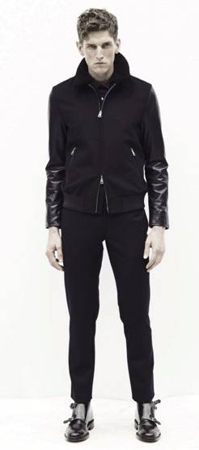

JACK & JONES（杰克琼斯）诞生于1989年，是丹麦BESTSELLER集团旗下的主要品牌之一，主营欧式风格设计男装。
1991年，JACK & JONES第一家店铺在挪威特隆赫姆开业，随后便开始在全世界掀起欧式男装浪潮。
2000年3月，JACK & JONES 正式进入中国市场，时至今日已经拥有1700多家店铺
J.LINDEBERG来自瑞典的男装品牌 , 是一家集设计、生产、销售于一体的高级成衣、时装公司

ONLY为所有生活在世界各大都市的独立、 自由、追求时尚和品质的现代女性设计。代表年轻人活力，有趣的生活方式，充满动感和浓厚的时代气息。
思莱德（SELECTED）男装是高品味的典型代表，用现代的方式传释古典绅士精神。
VERO MODA为独立自信的现代女性打造摩登而不失优雅的精致时装，以满足她们生活中多变的着装需求。